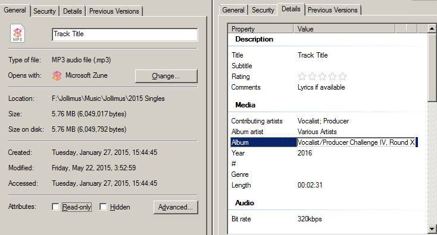

Rules and Regulations
1. Team Definition and Roles
- A team is comprised of one vocalist and one producer
- The team must remain the same members through the entirety of the competition
- The team must remain in the same roles through the entire competition
- The tracks must only feature members of that team unless otherwise stated.
- Each contestant is permitted entry with one team only.
- The producer is responsible for track production and final mixing
- The vocalist is responsible for lyrical content and delivery (the producer may "hype" the track or join the vocalist on the chorus)
2. Specific Production Guidelines
- Production can be samples, live instrumentation, synths, digital constructions, or a cappella (e.g. beatboxing) or any combination thereof; unless otherwise stated in a round challenge
- No plagiarism (Samples can be used but no straight beat theft)
- Production, mixing, and mastering must be done by producer
- Production must meet requirements of round challenge to be eligible for voting/scoring
- Production of the track must be initiated after the announcement of that round begins (No already released content or projects completed prior to the round start will be accepted)
3. Specific Vocalist Guidelines
- All lyrics must be written and performed by team vocalist unless otherwise stated in a round challenge (The producer may do hype vocals such as shout outs, intro skits, etc.)
- Vocals/writing must meet requirements of round challenge to be eligible for voting/scoring
- No plagiarism of lyrics will be tolerated
- This is intended to be a full song-submission challenge, each submission must have at least 16 bars/one standard verse to be eligible for submission
- Lyrical content on the track must be created after the announcement of that round begins (No already released content or projects completed prior to the round start will be accepted)
- Third party tracking of vocals is not permitted. Tracking may only be done by the vocalist or the producer, where geography permits
4. General Track Submission Guidelines
- All tracks must be submitted by 11:59 PM PST the day the challenge round ends.
- Tracks should be submitted in .mp3 format via email to nerdcorevpc@gmail.com
- Tracks must meet a minimum verse length
- Tracks must be no shorter than 60 seconds (Unless otherwise stated in a challange)as a total production
- No track shall be released to the public outside of the VPC approved outlets during the entirety of the competition or prior to the release of the first compilation album< (Sharing content linking back to the VPC postings of it on your own local social media is encouraged)
Submission for each round should include:
- Team and/or Member Names
- Title of Track
- Lyrics
- Track attached in .mp3 format (please note, no dropbox/drive/cloud links)
- Cover art, meeting Soundcloud's standards (800x800 pixels minimum, image must be square)
- ID3 Tags in agreed format (seen below).

General VPC IV Structure
- Each installment of the Vocalist/Producer Challenge shall last 5 rounds.
- Each round will be announced on a Saturday at 09:00 PM EST
- Each round will have a 3-week work period ending on Saturday at 02:59AM EST / 11:59 PM PST
- Each round will be posted to the public by 02:59AM EST / 11:59 PM PST Sunday
- Each round will then have a 1 week voting period ending 11:59 PM PST the following Saturday from the deadline of submission
- All 5 rounds will be averaged to determine our final winners
- Following the finalization of the contest, a compilation album will be released for free to the public comprised of judge-selected “best of” tracks from the entirety of the competition
- This album will be a free release
- Producers will keep stems of each round to provide for final mastering as needed
- Each round will have a challenge for the producer AND a challenge for the vocalist
- Each round will be judged by four judges with crowd vote acting as a 5th judge.
- All judge scores (including the aggregated fan-vote scores) will be weighted equally and average to achieve the final score for a team on each round.
- Scoring will be on a scale of 1-10 (10 being the highest)
- All judge scoring is final
- VPC and its organizers, hosts and managers reserve the right to cancel, disqualify and remove any team, track, submission, comment or other media at their discretion.
- Participants are expected to present their material, their team and their contributions in such a way that those contributions align with the vision and purpose of the VPC.
- No brigade voting allowed. Any attempts at marking one team high and the rest of the teams low will be deemed invalid votes and the IP address will be banned from voting in future rounds/VPCs.
- By enrolling in and participating the VPC you voluntarily agree to adhere to the rules and decisions put forth by the VPC.
- Any violation(s) of any of the stated rules are disqualifiable offenses and will be handled at the discretion of the contest organizers.
- By submitting a track you agree to adhere to the above policies.
VPC Prize Eligibility
- The prize for VPC5 has been crowd funded through Go Fund Me and Teespring T-shirt campaigns
- All money raised by the above will be distributed to the 1st place winner upon completion of the tournament.
- Team members must be members of the Nerdcore HipHop Facebook group to qualify for the first place prize, as this is a community driven competition and prize.